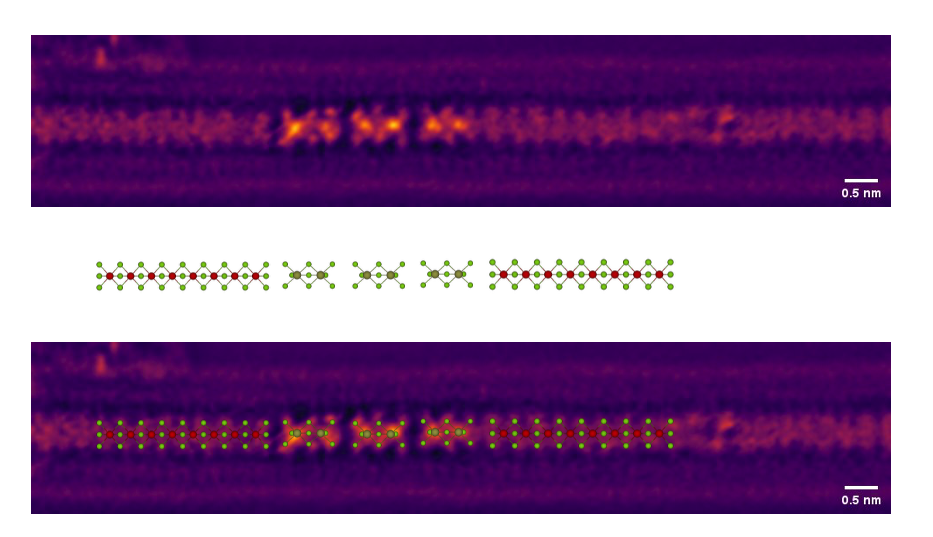
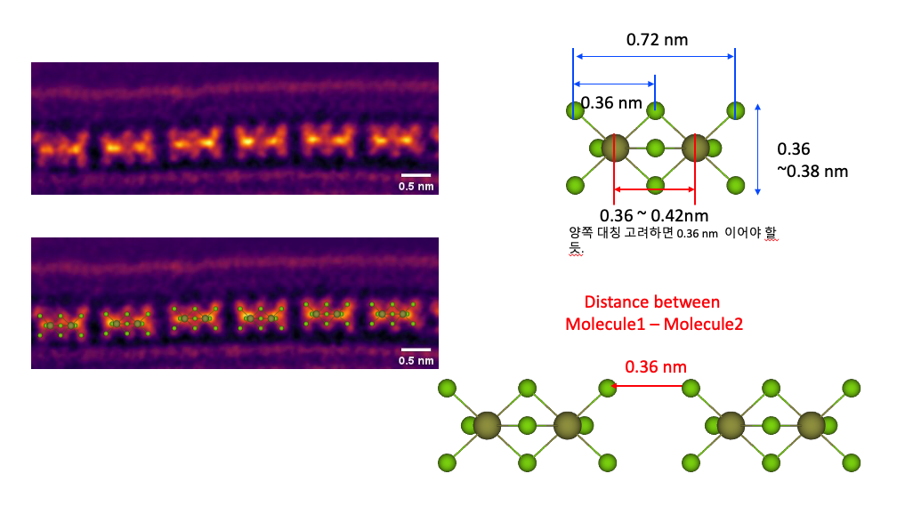
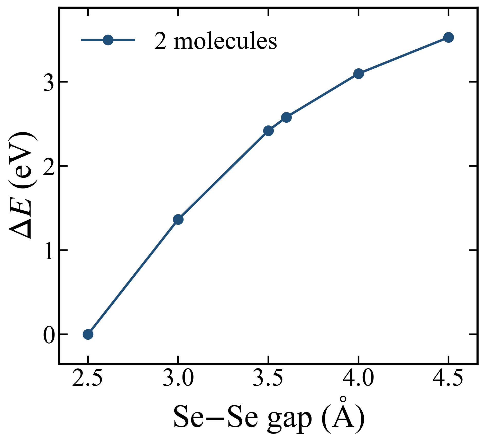
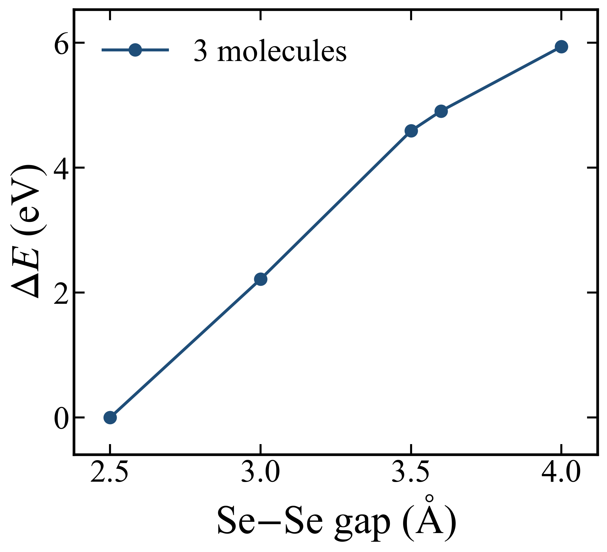
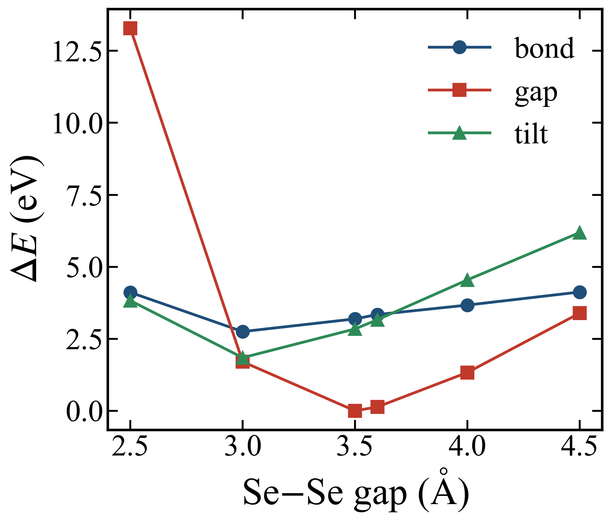
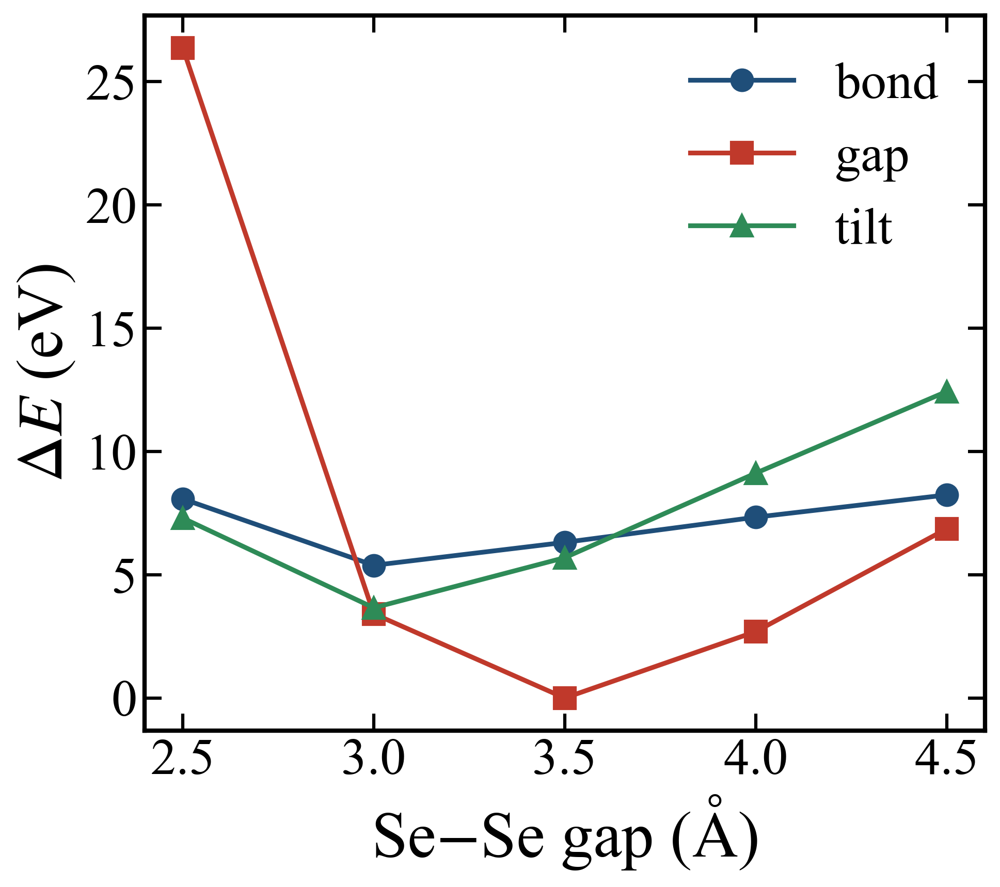

09. Hf₂Se₉ molecular stacking: distance and H-termination
Goal
Fix the stable stacking separation of Hf₂Se₉ units — a dimer (2 molecules) and a trimer (3 molecules) — and the H-termination of the open faces. Single-point (SP) energy vs the terminal Se–Se gap d.
Experimental basis (TEM)


Method
- vdW-DF2 (van der Waals density functional, LMKLL), MeshCutoff 500 Ry, Γ-point, vacuum box; SP total energies at fixed geometry.
- Terminal Se–Se gap scanned: d = 2.5, 3.0, 3.5, 3.6, 4.0, 4.5 Å (dimer); the trimer omits 3.6.
- Stage 1 bare (unterminated) stack. Stage 2 H-terminated: three H caps placed as a triangle at the gap-centre plane, distinguished by triangle radius — bond 0.82 Å / gap 1.97 Å (matches the Se ring) / tilt 3.0 Å. Stage 3 relax the lowest configuration.
Result
H-terminated, the gap-mode stack at d = 3.5 Å is the energy minimum for both dimer and trimer — consistent with the ~3.6 Å TEM spacing (the minimum is shallow: dimer d = 3.6 Å is only +0.13 eV). The bare scan instead falls to the shortest gap (d = 2.5 Å).
Stage 1 — bare distance scan (ΔE, meV)
| d (Å) | 2.5 | 3.0 | 3.5 | 3.6 | 4.0 | 4.5 |
|---|---|---|---|---|---|---|
| Dimer | 0 | 1365 | 2419 | 2580 | 3097 | 3527 |
| Trimer | 0 | 2216 | 4591 | — | 5939 | — |


Stage 2 — H-terminated mode scan (ΔE, meV; vs global min)
ΔE relative to the global minimum of each system (dimer −65856.850 eV; trimer −98810.933 eV).
| d (Å) | Dimer | Trimer | ||||
|---|---|---|---|---|---|---|
| bond | gap | tilt | bond | gap | tilt | |
| 2.5 | 4111 | 13287 | 3825 | 8077 | 26370 | 7298 |
| 3.0 | 2750 | 1703 | 1844 | 5382 | 3416 | 3659 |
| 3.5 | 3191 | 0 | 2842 | 6313 | 0 | 5692 |
| 3.6 | 3342 | 135 | 3164 | — | — | — |
| 4.0 | 3670 | 1330 | 4544 | 7334 | 2694 | 9119 |
| 4.5 | 4124 | 3389 | 6189 | 8237 | 6862 | 12431 |


Stage 3 — relaxation (in progress)
The gap-mode d = 3.5 Å configuration (dimer 25 atoms, 25×25×35 Å; trimer 39 atoms, 25×25×45 Å) is being relaxed with vdW-DF2 (Broyden, MaxForceTol 0.01 eV/Å, cell fixed); not yet converged.
Next steps
- Finish the gap-mode relaxation; report converged Hf–Hf, Se–Se gap, residual force.
- Feed the converged stack into the connected multi-molecule heterostructure (conductance decay).